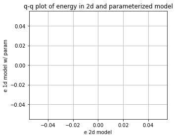
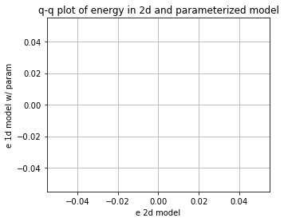

Using neural networks to parameterize advection in L96
Contents
Using neural networks to parameterize advection in L96¶
%matplotlib inline
import math
import matplotlib.pyplot as plt
import numpy as np
from IPython.display import HTML
from L96_model import (
L96,
RK2,
RK4,
EulerFwd,
L96_eq1_xdot,
integrate_L96_2t,
)
from matplotlib.animation import FuncAnimation
time_method = EulerFwd
Introduction¶
We are only going to use the single equation model from Lorenz (1996), or equation 3.1:
The reason we do this is because the advection term has a much larger control on the stability of the system than the scale-interaction term. It is fairly difficult to learn a model for the sub-grid scale term that causes L96 to go unstable so long as the timestep is sufficient to keep the advection term stable.
We want to to look into the stability of a learned parameterization, but to explore the stability in more detail we are going to focus on learning a neural-network for the advection.
It turns out this is rather challening, despite some early indications that it would be easy while I was still learning how to do everything!
Building a 1d and 2d version of the single-equation L96 model:¶
The ‘1d’ in time, or advectionless version of L96 reduces to:
the steady state solution is simply:
and the time-dependent solution is an exponential:
We are going to generate both 2d (w/ advection) and 1d (w/o advection) versions of the L96 model. The 2d model will then be used as training data to build a non-local neural network that can reproduce the effect of including the advection term.
# - This is a standard GCM class including a polynomial parameterization in rhs of equation for tendency.
# In this experiment we will not be using the parameterization in this class but have left it for generality.
class GCM:
def __init__(self, F, parameterization, time_stepping=time_method):
self.F = F
self.parameterization = parameterization
self.time_stepping = time_stepping
def rhs(self, X, param):
return L96_eq1_xdot(X, self.F) + self.parameterization(param, X, self.F)
def __call__(self, X0, dt, nt, param=[0]):
# X0 - initial conditions, dt - time increment, nt - number of forward steps to take
# param - parameters of our closure
time, hist, X = (
dt * np.arange(nt + 1),
np.zeros((nt + 1, len(X0))) * np.nan,
X0.copy(),
)
hist[0] = X
for n in range(nt):
X = self.time_stepping(self.rhs, dt, X, param)
hist[n + 1], time[n + 1] = X, dt * (n + 1)
return hist, time
# - This is the same as the GCM with one notable exception.
# We have set the advection flag to False in the RHS of the L96 equation.
class GCM_1d:
def __init__(self, F, parameterization, time_stepping=time_method):
self.F = F
self.parameterization = parameterization
self.time_stepping = time_stepping
def rhs(self, X, param):
return L96_eq1_xdot(X, self.F, advect=False) + self.parameterization(
param, X, self.F
)
def __call__(self, X0, dt, nt, param=[0]):
# X0 - initial conditions, dt - time increment, nt - number of forward steps to take
# param - parameters of our closure
time, hist, X = (
dt * np.arange(nt + 1),
np.zeros((nt + 1, len(X0))) * np.nan,
X0.copy(),
)
hist[0] = X
for n in range(nt):
X = self.time_stepping(self.rhs, dt, X, param)
hist[n + 1], time[n + 1] = X, dt * (n + 1)
return hist, time
Sample configuration¶
First we will run the 2d and 1d version of the model with a modest forcing of $F=10$.
We are going to try to simulate the effect of climate model drift on parameter space by running the same model but with $F=100$.
# Chose a modest forcing and simulate for 100 cycles
Forcing, dt, T = 10, 0.001, 10
Forcing_x10 = Forcing * 10
# Choose an random set of initial conditions
b = 5
init_cond = b * np.random.randn(8)
# ----------------------------------------------------------------
# We create the template 2d GCM here with the polynomial parameterization
# this model will be used to generate training data to learn the advection term.
naive_parameterization = lambda param, X, F: np.polyval(param, X)
gcm_2d = GCM(Forcing, naive_parameterization)
# ----------------------------------------------------------------
# We also create a super GCM for simulation with the forcing of 100.
# This will be used as the truth when we test the ability of the 1d model with the neural network to
# work outside of the parmameter space it was trained.
gcm_2d_x10 = GCM(Forcing_x10, naive_parameterization)
# ----------------------------------------------------------------
# Finally,we build the 1d GCM including the polynomial parameterization,
# and we create the corresponding super GCM with forcing squared.
gcm_1d = GCM_1d(Forcing, naive_parameterization)
gcm_1d_x10 = GCM_1d(Forcing_x10, naive_parameterization)
# Running the 2d and 1d versions of the GCM and GCM with F=100 ("_x10")
x2d, t2d = gcm_2d(
init_cond,
dt,
int(T / dt),
[
0.0,
],
)
x2d_x10, t2d_x10 = gcm_2d_x10(
init_cond,
dt,
int(T / dt),
[
0.0,
],
)
x1d, t1d = gcm_1d(
init_cond,
dt,
int(T / dt),
[
0.0,
],
)
x1d_x10, t1d_x10 = gcm_1d_x10(
init_cond,
dt,
int(T / dt),
[
0.0,
],
)
/usr/share/miniconda/envs/L96M2lines/lib/python3.9/site-packages/numpy/lib/polynomial.py:771: RuntimeWarning: invalid value encountered in multiply
y = y * x + p[i]
Metrics:¶
We are going to track the momentum and energy of L96 via the following metrics:
Energy:¶
These metrics are chosen to track the system. We are looking for a conservative property of the L96 system. It turns out in the single equation form of the L96 problem one of these two metrics is conserved by the advection process, which is the energy like term.
for tup in [2, T]:
F, ax = plt.subplots(1, 2, figsize=(10, 4))
a = ax.ravel()[0]
a.plot(t1d, np.sum(x1d, axis=1), label="1d", color="r", linewidth=2)
a.plot(t2d, np.sum(x2d, axis=1), label="2d", color="b", linewidth=2)
a.legend()
a.grid(True)
a.set_title("L96 momentum")
a.set_xlabel("t")
a.set_ylabel(r"$\sum_k X_k$")
a.set_xlim(0, tup)
a = ax.ravel()[1]
a.plot(t1d, np.sum(x1d**2, axis=1), label="1d", color="r", linewidth=2)
a.plot(t2d, np.sum(x2d**2, axis=1), label="2d", color="b", linewidth=2)
a.legend()
a.grid(True)
a.set_title("L96 energy")
a.set_xlabel("t")
a.set_ylabel(r"$\sum_k X_k^2$")
a.set_xlim(0, tup)
F.tight_layout();


Demo: Conservation of energy in L96¶
To demonstrate the conservation of energy in L96 advection we build a model with 0 forcing and 0 damping.
Note that the cyan line is an experiment only undergoing forcing by the advection term. The momentum is clearly not conserved, but the energy is (maybe not in the Euler Forward case…).
# Zero the forcing
Forcing_demo = 0
# Zero the damping via a linear parameterization term:
P_nodamp = [1.0, 0.0]
# Running the 2d and 1d versions of the GCM and GCM with squared forcing ("s")
gcm_2d_demo = GCM(Forcing_demo, naive_parameterization)
# The parameterization here is countering the decay term to demonstrate the conservation of this system
x2d_demo, t2d_demo = gcm_2d_demo(init_cond, dt, int(T / dt), P_nodamp)
for tup in [2, T]:
F, ax = plt.subplots(1, 2, figsize=(10, 4))
a = ax.ravel()[0]
a.plot(
t2d_demo,
np.sum(x2d_demo, axis=1),
label="2d, F=0 no damp",
color="c",
linewidth=2,
)
a.plot(t2d, np.sum(x2d, axis=1), label="2d, F=10", color="b", linewidth=2)
a.legend()
a.grid(True)
a.set_title("L96 momentum")
a.set_xlabel("t")
a.set_ylabel(r"$\sum_k X_k$")
a.set_xlim(0, tup)
a = ax.ravel()[1]
a.plot(
t2d_demo,
np.sum(x2d_demo**2, axis=1),
label="2d, F=0 no damp",
color="c",
linewidth=2,
)
a.plot(t2d, np.sum(x2d**2, axis=1), label="2d, F=10", color="b", linewidth=2)
a.legend()
a.grid(True)
a.set_title("L96 energy")
a.set_xlabel("t")
a.set_ylabel(r"$\sum_k X_k^2$")
a.set_xlim(0, tup)
F.tight_layout();


Building a dataset of advection tendencies to learn¶
In the next section we are going to create a dataset of advection tendencies to learn
N = 50000
X = []
Xm1 = []
Xm2 = []
Xp1 = []
Adv = []
# randomize the initial condition and run 1000 time-step spin up with the real world model
init_condr = 10 * np.random.randn(8)
x_2, _ = gcm_2d(
init_condr,
0.001,
1000,
[
0.0,
],
)
for ti in range(N):
# Set the initial condition from the spin up/2d model
init_condr_up = x_2[-1, :]
# Real world values
x_2, _ = gcm_2d(
init_condr_up,
0.001,
1,
[
0.0,
],
)
# Simple model values
x_1, _ = gcm_1d(
init_condr_up,
0.001,
1,
[
0.0,
],
)
# This is the difference in the tendency term due to neglecting 2d processes per time-step
Adv.append((x_2[-1, :] - x_1[-1, :]).ravel() / 0.001)
# Storing the state variable and its rolled forms for plotting and learning convenience
X.append(x_1[-1, :].ravel())
Xm1.append(np.roll(x_1[-1, :], 1).ravel())
Xm2.append(np.roll(x_1[-1, :], 2).ravel())
Xp1.append(np.roll(x_1[-1, :], -1).ravel())
X = np.array(X)
Xm1 = np.array(Xm1)
Xm2 = np.array(Xm2)
Xp1 = np.array(Xp1)
Adv = np.array(Adv)
Choosing a parameter to parameterize from¶
If we were simply looking at data and knew that the advection term was a missing force, we might start by looking at correlations with $X_k$ values, but we would quickly relize that this is not effective.
Even taking part of the actual advection term does not yield a useful feature parameter
plt.figure()
plt.plot(X, Adv, "k.")
plt.xlabel("$X_{k}$")
plt.ylabel("Advection")
plt.figure()
plt.plot(Xm1, Adv, "k.")
plt.xlabel("$X_{k-1}$")
plt.ylabel("Advection")
plt.figure()
plt.plot(Xp1, Adv, "k.")
plt.xlabel("$X_{k+1}$")
plt.ylabel("Advection")
plt.figure()
plt.plot(Xm2 - Xp1, Adv, "k.")
plt.xlabel("$X_{k-2}-X_{k+1}$")
plt.ylabel("Advection")
Text(0, 0.5, 'Advection')


Let’s now just assume that we knew the form of the advection term. We now get something that looks like a 1:1 linear relationship between the observed advection term and the correct feature parameter. It is not perfect because the values we are using for $X_k$ are not consistent with the RK4 time stepping (if we used forward Euler we would get a perfit fit).
# We are going to assume we know the feature variable that we need to train the model.
# However, because of sampling across a time-step we will not fit a perfect 1:1,
# we end up with something very close to 1:1, but we will use a higher order polynomial that will
# fail when used outside the training data.
plt.figure(figsize=(5, 4))
Feature = -Xm1 * (np.array(Xm2) - np.array(Xp1))
plt.plot(Feature, Adv, "r.")
plt.xlabel("$X_{k-1}(X_{k-2}-X_{k+1})$")
plt.ylabel("Advection tendency")
# Here use a 10th order polynomial that is it to the advection tendencies.
# This parameterization will probably fail when used outside of the training data.
P = np.polyfit(np.array(Feature).ravel(), np.array(Adv).ravel(), 1)
print("Fit (slope/bias): ", P)
FS = [-200, 200]
plt.plot(FS, np.polyval(P, FS), "g-", label="polynomial parameterization")
plt.plot(FS, FS, "k--", label="1:1")
plt.xlim(-200, 200)
plt.ylim(-200, 200)
plt.grid(True)
Fit (slope/bias): [ 1.00106922 -0.00702601]

# Create a new 1d GCM with a parameterization for the advection based on the known advection parameter
advection_parameterization = lambda param, X, F: np.polyval(
param, -np.roll(X, 1) * (np.roll(X, 2) - np.roll(X, -1))
)
gcm_1d_padv = GCM_1d(Forcing, advection_parameterization)
gcm_1d_padv_x10 = GCM_1d(Forcing_x10, advection_parameterization)
# Here is the 1d GCM with the learned advection via the linear parameterization
xplinear, tplinear = gcm_1d_padv(init_cond, dt, int(T / dt), P)
# And the same 1d GCM applied out of sample
xplinear_x10, tplinear_x10 = gcm_1d_padv_x10(init_cond, dt, int(T / dt), P)
/tmp/ipykernel_2667/2415865238.py:3: RuntimeWarning: overflow encountered in multiply
param, -np.roll(X, 1) * (np.roll(X, 2) - np.roll(X, -1))
/usr/share/miniconda/envs/L96M2lines/lib/python3.9/site-packages/numpy/lib/polynomial.py:771: RuntimeWarning: invalid value encountered in multiply
y = y * x + p[i]
def CompExps(Exp1, ExpN):
# Exp1 - reference experiment list
# ExpN - list of comparison experiments
try:
T1 = Exp1[0]
X1 = Exp1[1]
L1 = Exp1[2]
F, ax = plt.subplots(1, 2, figsize=(10, 4))
a = ax.ravel()[0]
a.plot(T1, np.sum(X1, axis=1), label=L1, color="k", linewidth=3)
a = ax.ravel()[1]
a.plot(T1, np.sum(X1**2, axis=1), label=L1, color="k", linewidth=3)
F2, ax2 = plt.subplots(1, figsize=(5, 4))
for Exp in ExpN:
TN = Exp[0]
XN = Exp[1]
LN = Exp[2]
a = ax.ravel()[0]
a.plot(TN, np.sum(XN, axis=1), label=LN, linewidth=2)
a = ax.ravel()[1]
a.plot(TN, np.sum(XN**2, axis=1), label=LN, linewidth=2)
_X = []
_Y = []
for ii in range(1, 100, 1):
_X.append(np.percentile(np.sum(X1[int(5 // dt) :] ** 2, axis=1), ii))
_Y.append(np.percentile(np.sum(XN[int(5 // dt) :] ** 2, axis=1), ii))
ax2.plot(_X, _Y, ".-", label=LN)
for ii in range(2):
a = ax.ravel()[ii]
a.legend()
a.grid(True)
ax[0].set(ylabel=r"$\sum_k X_k$", xlabel=r"$t$")
ax[1].set(ylabel=r"$\sum_k X_k^2$", xlabel=r"$t$")
F.tight_layout()
ax2.grid(True)
ax2.set(
xlabel="e 2d model",
ylabel="e 1d model w/ param",
title="q-q plot of energy in 2d and parameterized model",
)
LIM = np.nanmax(list(_X) + list(_Y))
ax2.set_xlim(0, LIM * 1.1)
ax2.set_ylim(0, LIM * 1.1)
ax2.plot([0, LIM], [0, LIM], "y-")
pass
except:
pass
CompExps(
[t2d, x2d, "2d"],
[
[tplinear, xplinear, "1d w/ linear"],
],
)


CompExps(
[t2d_x10, x2d_x10, "2d"],
[
[tplinear_x10, xplinear_x10, "1d w/ linear"],
],
)
/usr/share/miniconda/envs/L96M2lines/lib/python3.9/site-packages/numpy/core/fromnumeric.py:86: RuntimeWarning: invalid value encountered in reduce
return ufunc.reduce(obj, axis, dtype, out, **passkwargs)
/tmp/ipykernel_2667/2792372065.py:13: RuntimeWarning: overflow encountered in square
a.plot(T1, np.sum(X1**2, axis=1), label=L1, color="k", linewidth=3)
/tmp/ipykernel_2667/2792372065.py:25: RuntimeWarning: overflow encountered in square
a.plot(TN, np.sum(XN**2, axis=1), label=LN, linewidth=2)
/tmp/ipykernel_2667/2792372065.py:31: RuntimeWarning: overflow encountered in square
_Y.append(np.percentile(np.sum(XN[int(5 // dt) :] ** 2, axis=1), ii))
/tmp/ipykernel_2667/2792372065.py:48: RuntimeWarning: All-NaN axis encountered
LIM = np.nanmax(list(_X) + list(_Y))
 

What if we chose the wrong feature?¶
It turns out you can find features that are approximately correct and build a decent model for the advection
# Now we use a feature that is wrong to train the model
plt.figure()
Feature = -(np.array(Xm2) - np.array(Xp1) * np.array(Xm1))
plt.plot(Feature, Adv, "r.")
plt.xlabel("$(X_{k-1}-X_{k+1})$")
plt.ylabel("Advection tendency/Forcing")
# Here use a 10th order polynomial that is it to the advection tendencies.
# This parameterization will probably fail when used outside of the training data.
P_wrong = np.polyfit(np.array(Feature).ravel(), np.array(Adv).ravel(), 1)
FS = np.sort(np.array(Feature).ravel())
plt.plot(FS, np.polyval(P_wrong, FS), "g-", label="polynomial parameterization");

# Create a new 1d GCM with a 2d parameterization
advection_parameterization_wrong = lambda param, X, F: np.polyval(
param, -(np.roll(X, 2) - np.roll(X, -1) * np.roll(X, 1))
)
gcm_1d_padv_wrong = GCM_1d(Forcing, advection_parameterization_wrong)
# Here is the 1d GCM with the learned advection via the 10th order polynomial
x_wrongp, t_wrongp = gcm_1d_padv_wrong(init_cond, dt, int(T / dt), P_wrong)
CompExps(
[t2d, x2d, "2d"],
[
[t_wrongp, x_wrongp, "1d w/ wrong linear"],
],
)
/tmp/ipykernel_2667/2520304281.py:3: RuntimeWarning: overflow encountered in multiply
param, -(np.roll(X, 2) - np.roll(X, -1) * np.roll(X, 1))
/tmp/ipykernel_2667/2792372065.py:25: RuntimeWarning: overflow encountered in square
a.plot(TN, np.sum(XN**2, axis=1), label=LN, linewidth=2)
/tmp/ipykernel_2667/2792372065.py:31: RuntimeWarning: overflow encountered in square
_Y.append(np.percentile(np.sum(XN[int(5 // dt) :] ** 2, axis=1), ii))


Using the wrong feature gave us a very unstable model with advection that does not work.
In the following, we will try to learn the advection from a neural network. This result shows that we need to do something quite skillful to have a stable system.
Using the 3-layer non-local neural network¶
Now we can forget about neading to know the right form of the advection term. We are instead just going to throw the information from the advection scheme to the non-local neural network and let it learn the advection for itself.
These follow the templates from the exercise led by Janni in week 4.
I’m quite new to neural networks, so please let me know if you see any obvious mistakes in my approach!
import torch
import torch.nn.functional as F
import torch.utils.data as Data
import torchvision
from sklearn.metrics import r2_score
from torch import nn, optim
from torch.autograd import Variable
from torch_lr_finder import LRFinder
np.random.seed(14) # For reproducibility
torch.manual_seed(14) # For reproducibility
<torch._C.Generator at 0x7f08d4f840b0>
I’m going to start by scaling the data so that it is approximately order 1.¶
It looks like we can scaling $X$ and the advection with the forcing and forcing squared, respectively (we will come back to this assumption).
plt.figure()
plt.plot(X, Adv, "k.")
plt.xlabel("$X_k$")
plt.ylabel("$Adv_k$")
X_F = X / Forcing
Adv_F = Adv / Forcing**2
print("Advection RMS:", np.sqrt(np.mean(Adv**2)))
print("X RMS:", np.sqrt(np.mean(X**2)))
plt.figure()
plt.plot(X_F, Adv_F, "k.")
plt.xlabel("$X_k/F$")
plt.ylabel("$Adv_k/F^2$")
print("Scaled Advection RMS:", np.sqrt(np.mean(Adv_F**2)))
print("Scaled X RMS:", np.sqrt(np.mean(X_F**2)))
Advection RMS: 29.446361959446467
X RMS: 5.014596660970016
Scaled Advection RMS: 0.29446361959446465
Scaled X RMS: 0.5014596660970017


# Split into 80% training and 20% testing.
L = int(len(X) * 0.8)
# Create non local training data
# Define a data loader (8 inputs, 8 outputs)
# Define our X,Y pairs (state, subgrid tendency) for the linear regression local network.local_torch_dataset = Data.TensorDataset(
torch_dataset = Data.TensorDataset(
torch.from_numpy(np.array(X_F[:L])).double(),
torch.from_numpy(np.array(Adv_F[:L])).double(),
)
BATCH_SIZE = 1024 # Number of sample in each batch
loader = Data.DataLoader(dataset=torch_dataset, batch_size=BATCH_SIZE, shuffle=True)
print("N training data: ", len(X_F[:L]))
N training data: 40000
print("N testing data: ", len(X_F[L:]))
# Define a test dataloader (8 inputs, 8 outputs)
torch_dataset_test = Data.TensorDataset(
torch.from_numpy(np.array(X_F[L:])).double(),
torch.from_numpy(np.array(Adv_F[L:])).double(),
)
loader_test = Data.DataLoader(
dataset=torch_dataset_test, batch_size=BATCH_SIZE, shuffle=True
)
N testing data: 10000
# define network structure in pytorch
import torch.nn.functional as FF
class Net_ANN(nn.Module):
def __init__(self):
super(Net_ANN, self).__init__()
self.linear1 = nn.Linear(8, 16) # 8 inputs, 16 neurons for first hidden layer
self.linear2 = nn.Linear(16, 16) # 16 neurons for second hidden layer
self.linear3 = nn.Linear(16, 8) # 8 outputs
# self.lin_drop = nn.Dropout(0.1) #regularization method to prevent overfitting.
def forward(self, x):
x = FF.relu(self.linear1(x))
x = FF.relu(self.linear2(x))
x = self.linear3(x)
return x
def train_model(net, criterion, trainloader, optimizer):
net.train()
test_loss = 0
for step, (batch_x, batch_y) in enumerate(trainloader): # for each training step
b_x = Variable(batch_x) # Inputs
b_y = Variable(batch_y) # outputs
if (
len(b_x.shape) == 1
): # If is needed to add a dummy dimension if our inputs are 1D (where each number is a different sample)
prediction = torch.squeeze(
net(torch.unsqueeze(b_x, 1))
) # input x and predict based on x
else:
prediction = net(b_x)
loss = criterion(prediction, b_y) # Calculating loss
optimizer.zero_grad() # clear gradients for next train
loss.backward() # backpropagation, compute gradients
optimizer.step() # apply gradients to update weights
def test_model(net, criterion, trainloader, optimizer, text="validation"):
net.eval() # Evaluation mode (important when having dropout layers)
test_loss = 0
with torch.no_grad():
for step, (batch_x, batch_y) in enumerate(
trainloader
): # for each training step
b_x = Variable(batch_x) # Inputs
b_y = Variable(batch_y) # outputs
if (
len(b_x.shape) == 1
): # If is needed to add a dummy dimension if our inputs are 1D (where each number is a different sample)
prediction = torch.squeeze(
net(torch.unsqueeze(b_x, 1))
) # input x and predict based on x
else:
prediction = net(b_x)
loss = criterion(prediction, b_y) # Calculating loss
test_loss = test_loss + loss.data.numpy() # Keep track of the loss
test_loss /= len(trainloader) # dividing by the number of batches
# print(len(trainloader))
print(text + " loss:", test_loss)
return test_loss
criterion = torch.nn.MSELoss() # MSE loss function
torch.manual_seed(14) # For reproducibility
nn_3l = Net_ANN().double()
n_epochs = 20 # Number of epocs
optimizer = optim.Adam(nn_3l.parameters(), lr=0.03)
validation_loss = list()
train_loss = list()
# time0 = time()
for epoch in range(1, n_epochs + 1):
train_model(nn_3l, criterion, loader, optimizer)
train_loss.append(test_model(nn_3l, criterion, loader, optimizer, "train"))
validation_loss.append(test_model(nn_3l, criterion, loader_test, optimizer))
plt.plot(train_loss, "b", label="training loss")
plt.plot(validation_loss, "r", label="validation loss")
plt.legend();
train loss: 0.023976454211719102
validation loss: 0.02673119752887406
train loss: 0.013548915009697524
validation loss: 0.01724920747480611
train loss: 0.011875283148444318
validation loss: 0.01665746130156205
train loss: 0.010777243845649927
validation loss: 0.015769941262796936
train loss: 0.010789502187056524
validation loss: 0.015786570131707315
train loss: 0.010251383676629512
validation loss: 0.01619038256391348
train loss: 0.01020982335849303
validation loss: 0.015248259804410021
train loss: 0.00969203436150072
validation loss: 0.01441536606742217
train loss: 0.0095161944001536
validation loss: 0.013759952638541786
train loss: 0.009144298023152675
validation loss: 0.013131917115381513
train loss: 0.009235734491757774
validation loss: 0.013796228045852529
train loss: 0.00907707911416145
validation loss: 0.013012376723814395
train loss: 0.009231200450345835
validation loss: 0.012701172725695847
train loss: 0.009074426797564414
validation loss: 0.012721917154223907
train loss: 0.009270021121154708
validation loss: 0.012992712107342912
train loss: 0.009916953233571833
validation loss: 0.014302529120773658
train loss: 0.008843983827294403
validation loss: 0.01278543667919399
train loss: 0.008627414463128594
validation loss: 0.012103836108980064
train loss: 0.009113748673342515
validation loss: 0.013643258238673022
train loss: 0.00873210697453493
validation loss: 0.012556794228861029

# The neural network does a pretty good job predicting the advection tendencies
preds22 = nn_3l(torch.from_numpy(np.array(X_F)).double())
plt.figure()
plt.plot(preds22.detach().numpy()[0:, 2], label="NN Predicted values")
plt.plot(Adv_F[:, 2], label="True values")
plt.legend()
plt.figure()
plt.plot(Adv_F[:, 2], preds22.detach().numpy()[0:, 2], "k.")
plt.xlabel("Actual")
plt.ylabel("Prediction")
pass
Xt = init_cond
Advr = -np.roll(Xt, 1) * (np.roll(Xt, 2) - np.roll(Xt, -1))
nnAdv = nn_3l(torch.from_numpy(np.array(Xt / Forcing)).double()).detach().numpy()
plt.figure()
plt.plot(Advr, "k-")
plt.plot(nnAdv * Forcing**2, "r-")
[<matplotlib.lines.Line2D at 0x7f08d5b5f970>]


# - a GCM class including a neural network parameterization in rhs of equation for tendency
class GCM_network:
def __init__(self, F, network, time_stepping=time_method):
self.F = F
self.network = network
self.time_stepping = time_stepping
def rhs(self, X, param):
if self.network.linear1.in_features == 1:
X_torch = torch.from_numpy(X / self.F).double()
X_torch = torch.unsqueeze(X_torch, 1)
else:
X_torch = torch.from_numpy(np.expand_dims(X / self.F, 0)).double()
return L96_eq1_xdot(
X,
self.F + self.F**2 * np.squeeze(self.network(X_torch).data.numpy()),
advect=False,
) # Adding NN parameterization
def __call__(self, X0, dt, nt, param=[0]):
# X0 - initial conditions, dt - time increment, nt - number of forward steps to take
# param - parameters of our closure
time, hist, X = (
dt * np.arange(nt + 1),
np.zeros((nt + 1, len(X0))) * np.nan,
X0.copy(),
)
hist[0] = X
for n in range(nt):
X = self.time_stepping(self.rhs, dt, X, param)
hist[n + 1], time[n + 1] = X, dt * (n + 1)
return hist, time
# Run a test with the parameterization
gcm_nn = GCM_network(Forcing, nn_3l)
xnn, tnn = gcm_nn(init_cond, dt, int(T / (dt)), nn_3l)
gcm_nn_x10 = GCM_network(Forcing_x10, nn_3l)
xnn_x10, tnn_x10 = gcm_nn_x10(init_cond, dt, int(T / (dt)), nn_3l)
CompExps(
[t2d, x2d, "2d"],
[
[tnn, xnn, "1d w/ neural network"],
],
)


CompExps(
[t2d_x10, x2d_x10, "2d"],
[
[tnn_x10, xnn_x10, "1d w/ neural network"],
],
)
/usr/share/miniconda/envs/L96M2lines/lib/python3.9/site-packages/numpy/core/fromnumeric.py:86: RuntimeWarning: invalid value encountered in reduce
return ufunc.reduce(obj, axis, dtype, out, **passkwargs)
/tmp/ipykernel_2667/2792372065.py:13: RuntimeWarning: overflow encountered in square
a.plot(T1, np.sum(X1**2, axis=1), label=L1, color="k", linewidth=3)


def my_loss2(inpt, output, target):
# In which we add conservation of "momentum" to our loss function
loss = torch.mean(2 * (output - target) ** 2) + torch.mean(
torch.sum(output, axis=1) ** 2
)
return loss
def train_model2(net, criterion, trainloader, optimizer):
net.train()
test_loss = 0
for step, (batch_x, batch_y) in enumerate(trainloader): # for each training step
b_x = Variable(batch_x) # Inputs
b_y = Variable(batch_y) # outputs
if (
len(b_x.shape) == 1
): # If is needed to add a dummy dimension if our inputs are 1D (where each number is a different sample)
prediction = torch.squeeze(
net(torch.unsqueeze(b_x, 1))
) # input x and predict based on x
else:
prediction = net(b_x)
loss = criterion(b_x, prediction, b_y) # Calculating loss
optimizer.zero_grad() # clear gradients for next train
loss.backward() # backpropagation, compute gradients
optimizer.step() # apply gradients to update weights
def test_model2(net, criterion, trainloader, optimizer, text="validation"):
net.eval() # Evaluation mode (important when having dropout layers)
test_loss = 0
with torch.no_grad():
for step, (batch_x, batch_y) in enumerate(
trainloader
): # for each training step
b_x = Variable(batch_x) # Inputs
b_y = Variable(batch_y) # outputs
if (
len(b_x.shape) == 1
): # If is needed to add a dummy dimension if our inputs are 1D (where each number is a different sample)
prediction = torch.squeeze(
net(torch.unsqueeze(b_x, 1))
) # input x and predict based on x
else:
prediction = net(b_x)
loss = criterion(b_x, prediction, b_y) # Calculating loss
test_loss = test_loss + loss.data.numpy() # Keep track of the loss
test_loss /= len(trainloader) # dividing by the number of batches
# print(len(trainloader))
print(text + " loss:", test_loss)
return test_loss
torch.manual_seed(14) # For reproducibility
nn_3l_loss2 = Net_ANN().double()
n_epochs = 30 # Number of epocs
optimizer = optim.Adam(nn_3l_loss2.parameters(), lr=0.02)
validation_loss = list()
train_loss = list()
# time0 = time()
for epoch in range(1, n_epochs + 1):
train_model2(nn_3l_loss2, my_loss2, loader, optimizer)
train_loss.append(test_model2(nn_3l_loss2, my_loss2, loader, optimizer, "train"))
validation_loss.append(test_model2(nn_3l_loss2, my_loss2, loader_test, optimizer))
plt.plot(train_loss, "b", label="training loss")
plt.plot(validation_loss, "r", label="validation loss")
plt.legend();
train loss: 0.12433913969333972
validation loss: 0.15199392485487945
train loss: 0.08100169896268185
validation loss: 0.09558658226815105
train loss: 0.06291612152690175
validation loss: 0.07623145692042661
train loss: 0.05210516305882192
validation loss: 0.061560440295460706
train loss: 0.04573591349003783
validation loss: 0.05256580647344211
train loss: 0.04344983972666622
validation loss: 0.05163744679667141
train loss: 0.04238802859724879
validation loss: 0.0512881516633548
train loss: 0.042009106112952437
validation loss: 0.05068892148492229
train loss: 0.03688825717762324
validation loss: 0.04570437114633026
train loss: 0.03706318359708195
validation loss: 0.045017113584828
train loss: 0.035973419182835406
validation loss: 0.04417522323992538
train loss: 0.0350912769941614
validation loss: 0.04333125191499729
train loss: 0.03454805145439986
validation loss: 0.04233789244133305
train loss: 0.03424875998701406
validation loss: 0.04251279095665013
train loss: 0.03637885826131293
validation loss: 0.044354283893403235
train loss: 0.03413811803167283
validation loss: 0.04218184038447095
train loss: 0.035546721333896386
validation loss: 0.04385875390817745
train loss: 0.03419876326887208
validation loss: 0.04214357046072452
train loss: 0.034755962742288954
validation loss: 0.04308050547564203
train loss: 0.03340002398432364
validation loss: 0.04194113029024144
train loss: 0.03504093810795515
validation loss: 0.044622728889393906
train loss: 0.03382636287564753
validation loss: 0.042749146118339784
train loss: 0.034702614374111214
validation loss: 0.043359774962505315
train loss: 0.034239995416868264
validation loss: 0.043493593227377975
train loss: 0.03344308965009013
validation loss: 0.04272359519020935
train loss: 0.033695561949768735
validation loss: 0.04186015756488144
train loss: 0.03420606580486611
validation loss: 0.04320089844563503
train loss: 0.03356355775801583
validation loss: 0.04218803944680377
train loss: 0.032711789794148904
validation loss: 0.041337921860435785
train loss: 0.033820612351441334
validation loss: 0.04187843351414748
# The neural network does a pretty good job predicting the advection tendencies
preds22o = nn_3l(torch.from_numpy(np.array(X_F)).double())
preds22 = nn_3l_loss2(torch.from_numpy(np.array(X_F)).double())
plt.figure()
plt.plot(preds22.detach().numpy()[0:, 2], label="NN Predicted values")
plt.plot(Adv_F[:, 2], label="True values")
plt.legend()
plt.figure()
plt.plot(Adv_F[:, 2], preds22.detach().numpy()[0:, 2], "k.")
plt.xlabel("Actual")
plt.ylabel("Prediction")
plt.figure()
plt.plot(np.sum(preds22o.detach().numpy(), axis=1), "r.")
plt.plot(np.sum(preds22.detach().numpy(), axis=1), "k.")
plt.ylabel("Prediction momentum")
Xt = init_cond
Advr = -np.roll(Xt, 1) * (np.roll(Xt, 2) - np.roll(Xt, -1))
nnAdv = nn_3l_loss2(torch.from_numpy(np.array(Xt / Forcing)).double()).detach().numpy()
plt.figure()
plt.plot(Advr, "k-", label="actual")
plt.plot(nnAdv * Forcing**2, "r-", label="predicted")
pass;


gcm_nn2 = GCM_network(Forcing, nn_3l_loss2)
xnn2, tnn2 = gcm_nn2(init_cond, dt, int(T / (dt)), nn_3l_loss2)
gcm_nn2_x10 = GCM_network(Forcing_x10, nn_3l_loss2)
xnn2_x10, tnn2_x10 = gcm_nn2_x10(init_cond, dt, int(T / (dt)), nn_3l_loss2)
CompExps(
[t2d, x2d, "2d"],
[
[tnn2, xnn2, "1d w/ NN conserving momentum"],
],
)


CompExps(
[t2d_x10, x2d_x10, "2d"],
[
[tnn2_x10, xnn2_x10, "1d w/ NN conserving momentum"],
],
)
/tmp/ipykernel_2667/2792372065.py:13: RuntimeWarning: overflow encountered in square
a.plot(T1, np.sum(X1**2, axis=1), label=L1, color="k", linewidth=3)


How about with some regularization?¶
torch.manual_seed(14) # For reproducibility
nn_3l_loss3 = Net_ANN().double()
n_epochs = 50 # Number of epocs
optimizer = optim.Adam(nn_3l_loss3.parameters(), lr=0.01, weight_decay=0.01)
validation_loss = list()
train_loss = list()
# time0 = time()
for epoch in range(1, n_epochs + 1):
train_model2(nn_3l_loss3, my_loss2, loader, optimizer)
train_loss.append(test_model2(nn_3l_loss3, my_loss2, loader, optimizer, "train"))
validation_loss.append(test_model2(nn_3l_loss3, my_loss2, loader_test, optimizer))
plt.plot(train_loss, "b", label="training loss")
plt.plot(validation_loss, "r", label="validation loss")
plt.legend();
train loss: 0.1484983630279433
validation loss: 0.1931884305272666
train loss: 0.1319253119145367
validation loss: 0.16888181532321095
train loss: 0.12614149195986565
validation loss: 0.15780259832502286
train loss: 0.12310192076150335
validation loss: 0.15164824386180067
train loss: 0.12203800403865042
validation loss: 0.15044723956435382
train loss: 0.11997821447729676
validation loss: 0.14704300190979133
train loss: 0.11847987978167558
validation loss: 0.14306720040827897
train loss: 0.11642477117328645
validation loss: 0.14054864335289968
train loss: 0.11568718230864568
validation loss: 0.14032510305562376
train loss: 0.11598379351012249
validation loss: 0.13988873624146345
train loss: 0.11500424549167063
validation loss: 0.13870725708276727
train loss: 0.1148653508865958
validation loss: 0.13786588218702203
train loss: 0.11463695235916893
validation loss: 0.1385273471559052
train loss: 0.11463017424896345
validation loss: 0.13794790092644363
train loss: 0.1143090010456915
validation loss: 0.13797136429843732
train loss: 0.11333847636574919
validation loss: 0.13576769066327693
train loss: 0.11340582141397097
validation loss: 0.13669788298775093
train loss: 0.11398448994479035
validation loss: 0.1363731224449301
train loss: 0.11335043043258039
validation loss: 0.13671914904958984
train loss: 0.11330630609576889
validation loss: 0.13690032912839417
train loss: 0.11242566994795303
validation loss: 0.13555043745345952
train loss: 0.11313718393617715
validation loss: 0.13595716474589462
train loss: 0.11347031901169127
validation loss: 0.1366283538023535
train loss: 0.11263358757810146
validation loss: 0.13500644363191136
train loss: 0.11284235299141965
validation loss: 0.13657545253908907
train loss: 0.11318584715804055
validation loss: 0.135464391710533
train loss: 0.11218895128032916
validation loss: 0.1344461119181663
train loss: 0.1131508777424807
validation loss: 0.13559417578041438
train loss: 0.11341474525571413
validation loss: 0.1362080781669152
train loss: 0.11372559344485644
validation loss: 0.1362338383036853
train loss: 0.1135133260162708
validation loss: 0.13664550855484192
train loss: 0.113872805588592
validation loss: 0.13749621387562455
train loss: 0.11333824964467765
validation loss: 0.13647770734607823
train loss: 0.1132766531411151
validation loss: 0.13607211793620752
train loss: 0.11358029922388262
validation loss: 0.1356770292541771
train loss: 0.11304165891352717
validation loss: 0.1356815711918584
train loss: 0.11252559065319075
validation loss: 0.13542895914055586
train loss: 0.11339232131607395
validation loss: 0.1365422038835265
train loss: 0.11356097001680861
validation loss: 0.13688779538638285
train loss: 0.11262224155277603
validation loss: 0.13507339399046145
train loss: 0.1123945990476829
validation loss: 0.13608081220398485
train loss: 0.11395736959827889
validation loss: 0.13640501746547973
train loss: 0.11334126144541812
validation loss: 0.136547685919764
train loss: 0.11370913573005526
validation loss: 0.13657173175917842
train loss: 0.11274547540410558
validation loss: 0.1354493325580637
train loss: 0.11323766730911237
validation loss: 0.13633986517411298
train loss: 0.11352886726884967
validation loss: 0.13711185388701658
train loss: 0.11241545008612219
validation loss: 0.13437863192828226
train loss: 0.11367941781682174
validation loss: 0.13737022420331255
train loss: 0.11293958949126064
validation loss: 0.13560566113525593
# The neural network does a pretty good job predicting the advection tendencies
preds22o = nn_3l(torch.from_numpy(np.array(X_F)).double())
preds22 = nn_3l_loss3(torch.from_numpy(np.array(X_F)).double())
plt.figure()
plt.plot(preds22.detach().numpy()[0:, 2], label="NN Predicted values")
plt.plot(Adv_F[:, 2], label="True values")
plt.legend()
plt.figure()
plt.plot(Adv_F[:, 2], preds22.detach().numpy()[0:, 2], "k.")
plt.xlabel("Actual")
plt.ylabel("Prediction")
plt.figure()
plt.plot(np.sum(preds22o.detach().numpy(), axis=1), "r.")
plt.plot(np.sum(preds22.detach().numpy(), axis=1), "k.")
plt.ylabel("Prediction momentum")
Xt = init_cond
Advr = -np.roll(Xt, 1) * (np.roll(Xt, 2) - np.roll(Xt, -1))
nnAdv = nn_3l_loss3(torch.from_numpy(np.array(Xt / Forcing)).double()).detach().numpy()
plt.figure()
plt.plot(Advr, "k-", label="actual")
plt.plot(nnAdv * Forcing**2, "r-", label="predicted")
pass;


gcm_nn3 = GCM_network(Forcing, nn_3l_loss3)
xnn3, tnn3 = gcm_nn3(init_cond, dt, int(T / (dt)), nn_3l_loss3)
gcm_nn3_x10 = GCM_network(Forcing_x10, nn_3l_loss3)
xnn3_x10, tnn3_x10 = gcm_nn3_x10(init_cond, dt, int(T / (dt)), nn_3l_loss3)
CompExps(
[t2d, x2d, "2d"],
[
[tnn3, xnn3, "1d w/ NN momentum reg."],
[t1d, x1d, "1d "],
],
)


CompExps(
[t2d, x2d, "2d"],
[
[tnn3_x10, xnn3_x10, "1d w/ NN momentum reg."],
],
)


Try a different scaling term¶
Could scaling with the Forcing be the issue?
# Use the advection tendencies, splitting into 80% training and 20% testing.
L = int(len(X) * 0.8)
print(L)
ScX = np.sqrt(np.mean(X**2))
X_S = X / ScX
ScA = np.sqrt(np.mean(Adv**2))
Adv_S = Adv / ScA
# Create non local training data
# Define a data loader (8 inputs, 8 outputs)
# Define our X,Y pairs (state, subgrid tendency) for the linear regression local network.local_torch_dataset = Data.TensorDataset(
torch_dataset = Data.TensorDataset(
torch.from_numpy(np.array(X_S[:L])).double(),
torch.from_numpy(np.array(Adv_S[:L])).double(),
)
BATCH_SIZE = 1024 # Number of sample in each batch
loader = Data.DataLoader(dataset=torch_dataset, batch_size=BATCH_SIZE, shuffle=True)
# Define a test dataloader (8 inputs, 8 outputs)
torch_dataset_test = Data.TensorDataset(
torch.from_numpy(np.array(X_S[L:])).double(),
torch.from_numpy(np.array(Adv_S[L:])).double(),
)
loader_test = Data.DataLoader(
dataset=torch_dataset_test, batch_size=BATCH_SIZE, shuffle=True
)
40000
torch.manual_seed(14) # For reproducibility
nn_3l_loss4 = Net_ANN().double()
n_epochs = 50 # Number of epocs
optimizer = optim.Adam(nn_3l_loss4.parameters(), lr=0.01, weight_decay=0.02)
validation_loss = list()
train_loss = list()
# time0 = time()
for epoch in range(1, n_epochs + 1):
train_model2(nn_3l_loss4, my_loss2, loader, optimizer)
train_loss.append(test_model2(nn_3l_loss4, my_loss2, loader, optimizer, "train"))
validation_loss.append(test_model2(nn_3l_loss4, my_loss2, loader_test, optimizer))
plt.plot(train_loss, "b", label="training loss")
plt.plot(validation_loss, "r", label="validation loss")
plt.legend();
train loss: 1.283056532274176
validation loss: 1.5050605393371643
train loss: 0.8920693224947522
validation loss: 0.9670791895502117
train loss: 0.6589233764696927
validation loss: 0.703074778020609
train loss: 0.5898067788382049
validation loss: 0.6487603844716577
train loss: 0.5435172032537773
validation loss: 0.6119867163106849
train loss: 0.5161053198967553
validation loss: 0.5942138509905084
train loss: 0.49510114466316624
validation loss: 0.5646254357431744
train loss: 0.4846945496392509
validation loss: 0.5534847840334212
train loss: 0.46799463397608665
validation loss: 0.5424217912138536
train loss: 0.4668420387206155
validation loss: 0.5374481439647082
train loss: 0.4623399168465766
validation loss: 0.5242781584929679
train loss: 0.45715253213395723
validation loss: 0.5180720095365827
train loss: 0.4559837995136461
validation loss: 0.5252250854419376
train loss: 0.45221987994414886
validation loss: 0.5116416845547999
train loss: 0.4521859106227664
validation loss: 0.5189413305056985
train loss: 0.4473388302413547
validation loss: 0.5099097782856481
train loss: 0.44917216288236317
validation loss: 0.5109078886755778
train loss: 0.4539241478278514
validation loss: 0.5174560972124675
train loss: 0.4450213200652068
validation loss: 0.5138853395693299
train loss: 0.446002561732542
validation loss: 0.5048084584234116
train loss: 0.44338276617849337
validation loss: 0.5072962961192504
train loss: 0.4446592834535168
validation loss: 0.5043964991130022
train loss: 0.4459567680841567
validation loss: 0.5079064765651485
train loss: 0.44368466718983635
validation loss: 0.5078050338768489
train loss: 0.4427362536265992
validation loss: 0.5099052316606704
train loss: 0.44215129323386587
validation loss: 0.4964464256729205
train loss: 0.44031213547640524
validation loss: 0.5036162639079311
train loss: 0.4423035730264033
validation loss: 0.5041627395121363
train loss: 0.44014803947438413
validation loss: 0.5008266255487908
train loss: 0.4448402507721908
validation loss: 0.5056767641935018
train loss: 0.44218231901412447
validation loss: 0.5003774674058895
train loss: 0.4380287073088728
validation loss: 0.5058426594654015
train loss: 0.43862716525282786
validation loss: 0.5022048311930876
train loss: 0.4377078503183863
validation loss: 0.5007234326108171
train loss: 0.43956456383857906
validation loss: 0.49945019132426055
train loss: 0.43743023682965176
validation loss: 0.49328874634885417
train loss: 0.4344462261924248
validation loss: 0.49428300282887044
train loss: 0.43327914618214736
validation loss: 0.4950386551381178
train loss: 0.433082966840144
validation loss: 0.49713659549261724
train loss: 0.4323842578504736
validation loss: 0.49800412337755107
train loss: 0.4305269025372757
validation loss: 0.48865784524295713
train loss: 0.43579787236210077
validation loss: 0.5002499153503204
train loss: 0.4304379051438397
validation loss: 0.49131273976127393
train loss: 0.43311194291229843
validation loss: 0.4936433483230617
train loss: 0.4293138156734052
validation loss: 0.49129697885287565
train loss: 0.42818575235656076
validation loss: 0.48645772030466994
train loss: 0.43291099660758237
validation loss: 0.4854623183572147
train loss: 0.42849397009856593
validation loss: 0.48377711900494924
train loss: 0.4301890135856013
validation loss: 0.490856868675447
train loss: 0.42871806968285997
validation loss: 0.4838803028248536
# The neural network does a pretty good job predicting the advection tendencies
preds22o = nn_3l_loss3(torch.from_numpy(np.array(X_S)).double())
preds22 = nn_3l_loss4(torch.from_numpy(np.array(X_S)).double())
plt.figure()
plt.plot(preds22.detach().numpy()[0:, 2], label="NN Predicted values")
plt.plot(Adv_S[:, 2], label="True values")
plt.legend()
plt.figure()
plt.plot(Adv_S[:, 2], preds22.detach().numpy()[0:, 2], "k.")
plt.xlabel("Actual")
plt.ylabel("Prediction")
plt.figure()
plt.plot(np.sum(preds22o.detach().numpy(), axis=1) * Forcing, "r.")
plt.plot(np.sum(preds22.detach().numpy(), axis=1) * ScA, "k.")
plt.ylabel("Prediction momentum")
Xt = init_cond
Advr = -np.roll(Xt, 1) * (np.roll(Xt, 2) - np.roll(Xt, -1))
nnAdv = nn_3l_loss4(torch.from_numpy(np.array(Xt / Forcing)).double()).detach().numpy()
plt.figure()
plt.plot(Advr, "k-", label="actual")
plt.plot(nnAdv * Forcing**2, "r-", label="predicted")
pass;


# - a GCM class including a neural network parameterization in rhs of equation for tendency
class GCM_network_S:
def __init__(self, F, network, time_stepping=time_method):
self.F = F
self.network = network
self.time_stepping = time_stepping
def rhs(self, X, param):
if self.network.linear1.in_features == 1:
X_torch = torch.from_numpy(X / ScX).double()
X_torch = torch.unsqueeze(X_torch, 1)
else:
X_torch = torch.from_numpy(np.expand_dims(X / ScX, 0)).double()
return L96_eq1_xdot(
X,
self.F + ScA * np.squeeze(self.network(X_torch).data.numpy()),
advect=False,
) # Adding NN parameterization
def __call__(self, X0, dt, nt, param=[0]):
# X0 - initial conditions, dt - time increment, nt - number of forward steps to take
# param - parameters of our closure
time, hist, X = (
dt * np.arange(nt + 1),
np.zeros((nt + 1, len(X0))) * np.nan,
X0.copy(),
)
hist[0] = X
for n in range(nt):
X = self.time_stepping(self.rhs, dt, X, param)
hist[n + 1], time[n + 1] = X, dt * (n + 1)
return hist, time
gcm_nn4 = GCM_network_S(Forcing, nn_3l_loss4)
xnn4, tnn4 = gcm_nn4(init_cond, dt, int(T / dt), nn_3l_loss4)
gcm_nn4_x10 = GCM_network_S(Forcing_x10, nn_3l_loss4)
xnn4_x10, tnn4_x10 = gcm_nn4_x10(init_cond, dt, int(T / dt), nn_3l_loss4)
CompExps(
[t2d, x2d, "2d"],
[
[tnn4, xnn4, "1d w/ rescaled NN mom."],
],
)


CompExps(
[t2d, x2d, "2d"],
[
[tnn4_x10, xnn4_x10, "1d w/ rescaled NN mom."],
],
)


def my_loss3(inpt, output, target):
# In which we replace conservation of "momentum" with conservation of "energy"
loss = torch.mean(2 * (output - target) ** 2) + WT * torch.mean(
torch.sum(inpt * output, axis=1) ** 2
)
return loss
WT = 1
torch.manual_seed(14) # For reproducibility
nn_3l_loss5 = Net_ANN().double()
n_epochs = 50 # Number of epocs
optimizer = optim.Adam(nn_3l_loss5.parameters(), lr=0.01)
validation_loss = list()
train_loss = list()
# time0 = time()
for epoch in range(1, n_epochs + 1):
train_model2(nn_3l_loss5, my_loss3, loader, optimizer)
train_loss.append(test_model2(nn_3l_loss5, my_loss3, loader, optimizer, "train"))
validation_loss.append(test_model2(nn_3l_loss5, my_loss3, loader_test, optimizer))
plt.plot(train_loss, "b", label="training loss")
plt.plot(validation_loss, "r", label="validation loss")
plt.legend();
train loss: 1.1103186137439902
validation loss: 1.446341763366936
train loss: 0.7456689021180771
validation loss: 0.9749218128668522
train loss: 0.6241814222470717
validation loss: 0.8772678041947547
train loss: 0.5239597048996874
validation loss: 0.809187066705596
train loss: 0.49779440525197255
validation loss: 0.7806251061968366
train loss: 0.4700468978131208
validation loss: 0.8140023644558229
train loss: 0.4321600586924605
validation loss: 0.7934326497723211
train loss: 0.42382701370353093
validation loss: 0.7700842231179909
train loss: 0.3948642253400145
validation loss: 0.7768642807449208
train loss: 0.39964829073625924
validation loss: 0.7370380971862813
train loss: 0.3712491551685422
validation loss: 0.7554704314812215
train loss: 0.37283044678444227
validation loss: 0.8219949697106255
train loss: 0.35912353115951656
validation loss: 0.7732233807037521
train loss: 0.3577279346923849
validation loss: 0.7395490549592638
train loss: 0.34472772763283666
validation loss: 0.7319887075363245
train loss: 0.34813366364731796
validation loss: 0.7848937528471852
train loss: 0.3368088863616133
validation loss: 0.7184240195593394
train loss: 0.326798167774191
validation loss: 0.7301442881842678
train loss: 0.3348523748476969
validation loss: 0.706698235472232
train loss: 0.319050571460488
validation loss: 0.7266488748328108
train loss: 0.3593179041298845
validation loss: 0.7166130181865268
train loss: 0.31682294699486346
validation loss: 0.6721521743530575
train loss: 0.31169724519994957
validation loss: 0.6903907176610471
train loss: 0.31825214422959763
validation loss: 0.6787319845923141
train loss: 0.32407135443499785
validation loss: 0.6752954531561866
train loss: 0.2936096590551595
validation loss: 0.6742593551411287
train loss: 0.3248587695748442
validation loss: 0.6766525432424625
train loss: 0.3062261680196361
validation loss: 0.6782974197000302
train loss: 0.31016549918362396
validation loss: 0.6783194874019254
train loss: 0.3121164361157801
validation loss: 0.7110827870216904
train loss: 0.2966275647348029
validation loss: 0.707415615388131
train loss: 0.292240927130463
validation loss: 0.6615145105018077
train loss: 0.28870783351887264
validation loss: 0.6710823194602624
train loss: 0.2956020493058876
validation loss: 0.6753396784706949
train loss: 0.28413258072606046
validation loss: 0.6767062878731058
train loss: 0.28241112970474147
validation loss: 0.6742545507386597
train loss: 0.2871381438254519
validation loss: 0.6533382298846329
train loss: 0.28454586081662014
validation loss: 0.6797514055124423
train loss: 0.28192924101082106
validation loss: 0.68596725511168
train loss: 0.2806185317943335
validation loss: 0.6660673624728612
train loss: 0.281490457671231
validation loss: 0.6947175877471464
train loss: 0.2948819725196362
validation loss: 0.7205987184649514
train loss: 0.2968063212130939
validation loss: 0.7065372832297226
train loss: 0.3019679064511859
validation loss: 0.7097862765439387
train loss: 0.2988910515618508
validation loss: 0.7156383419100543
train loss: 0.2773889533225883
validation loss: 0.6801153999010644
train loss: 0.28302261740181883
validation loss: 0.687150598727657
train loss: 0.2793091268627798
validation loss: 0.7154400366435786
train loss: 0.2928557446872578
validation loss: 0.7095149075728004
train loss: 0.2795010831525286
validation loss: 0.6801174580467289

# The neural network does a pretty good job predicting the advection tendencies
preds22o = nn_3l_loss4(torch.from_numpy(np.array(X_S)).double())
preds22 = nn_3l_loss5(torch.from_numpy(np.array(X_S)).double())
plt.figure()
plt.plot(preds22.detach().numpy()[:, 2], label="NN Predicted values")
plt.plot(Adv_S[:, 2], label="True values")
plt.legend()
plt.figure()
plt.plot(Adv_S[:, 2], preds22.detach().numpy()[:, 2], "k.")
plt.xlabel("Actual")
plt.ylabel("Prediction")
plt.figure()
plt.plot(np.sum(preds22o.detach().numpy(), axis=1) * Forcing, "r.")
plt.plot(np.sum(preds22.detach().numpy(), axis=1) * ScA, "k.")
plt.ylabel("Prediction momentum")
plt.figure()
plt.plot(np.sum(X * preds22o.detach().numpy() * Forcing, axis=1), "r.")
plt.plot(np.sum(X * preds22.detach().numpy() * ScA, axis=1), "k.")
plt.ylabel("Prediction energy")
Xt = init_cond
Advr = -np.roll(Xt, 1) * (np.roll(Xt, 2) - np.roll(Xt, -1))
nnAdv = nn_3l_loss5(torch.from_numpy(np.array(Xt / Forcing)).double()).detach().numpy()
plt.figure()
plt.plot(Advr, "k-", label="actual")
plt.plot(nnAdv * Forcing**2, "r-", label="predicted")
pass;


gcm_nn5 = GCM_network_S(Forcing, nn_3l_loss5)
xnn5, tnn5 = gcm_nn5(init_cond, dt, int(T / dt), nn_3l_loss5)
gcm_nn5_x10 = GCM_network_S(Forcing_x10, nn_3l_loss5)
xnn5_x10, tnn5_x10 = gcm_nn5_x10(init_cond, dt, int(T / dt), nn_3l_loss5)
CompExps(
[t2d, x2d, "2d"],
[
[tnn5, xnn5, "1d w/ rescaled NN enrgy."],
],
)


CompExps(
[t2d, x2d, "2d"],
[
[tnn5_x10, xnn5_x10, "1d w/ rescaled NN enrgy."],
],
)


WT = 5
torch.manual_seed(14) # For reproducibility
nn_3l_loss6 = Net_ANN().double()
n_epochs = 50 # Number of epocs
optimizer = optim.Adam(nn_3l_loss6.parameters(), lr=0.01)
validation_loss = list()
train_loss = list()
# time0 = time()
for epoch in range(1, n_epochs + 1):
train_model2(nn_3l_loss6, my_loss3, loader, optimizer)
train_loss.append(test_model2(nn_3l_loss6, my_loss3, loader, optimizer, "train"))
validation_loss.append(test_model2(nn_3l_loss6, my_loss3, loader_test, optimizer))
plt.plot(train_loss, "b", label="training loss")
plt.plot(validation_loss, "r", label="validation loss")
plt.legend();
train loss: 1.585038307724826
validation loss: 2.092966559306407
train loss: 1.1381337695315978
validation loss: 1.6383166335462493
train loss: 0.9946992424818617
validation loss: 1.472012596578391
train loss: 0.8907139790815984
validation loss: 1.410012592243073
train loss: 0.849063765623699
validation loss: 1.4194817066556475
train loss: 0.7934825476744516
validation loss: 1.2969275087448353
train loss: 0.8312215491846103
validation loss: 1.3436009355884102
train loss: 0.8023627200664544
validation loss: 1.4806463391935325
train loss: 0.7460234484778463
validation loss: 1.381026285111868
train loss: 0.7203596752970162
validation loss: 1.220215709891172
train loss: 0.7053125209144837
validation loss: 1.3692364659871972
train loss: 0.6735757543779392
validation loss: 1.2077118815316603
train loss: 0.6828006097709104
validation loss: 1.1928038096116644
train loss: 0.6682648670743485
validation loss: 1.3459539085790415
train loss: 0.6440764220190744
validation loss: 1.2323385370341358
train loss: 0.6617701383639676
validation loss: 1.2882893286560058
train loss: 0.6038650071861201
validation loss: 1.1987189003649605
train loss: 0.6138925696415826
validation loss: 1.2601425356716844
train loss: 0.6093593954903435
validation loss: 1.3234273504523695
train loss: 0.6549935301981988
validation loss: 1.3605877239229474
train loss: 0.5910906824423539
validation loss: 1.3943054283922276
train loss: 0.5919759099619196
validation loss: 1.295873039228481
train loss: 0.672214186306684
validation loss: 1.5880014799808675
train loss: 0.6142455253119817
validation loss: 1.47638229698862
train loss: 0.5669781329256217
validation loss: 1.2966389581033073
train loss: 0.5687064852075447
validation loss: 1.367026656610131
train loss: 0.6011513941907365
validation loss: 1.472526281279535
train loss: 0.588813943082711
validation loss: 1.2964751369849905
train loss: 0.5544506421810937
validation loss: 1.290986262064625
train loss: 0.5348717350522185
validation loss: 1.3845054747142078
train loss: 0.6065475448869786
validation loss: 1.3919649136209515
train loss: 0.5579299502721464
validation loss: 1.3462963938778547
train loss: 0.5464639360766502
validation loss: 1.4132755667897825
train loss: 0.5286859124594894
validation loss: 1.3741883280737428
train loss: 0.5328332198148009
validation loss: 1.392676551114603
train loss: 0.5273561698981113
validation loss: 1.4805936062807856
train loss: 0.5241959662131814
validation loss: 1.4418560347994474
train loss: 0.5531674075381041
validation loss: 1.5040327959243869
train loss: 0.5139822380367904
validation loss: 1.4710332587638724
train loss: 0.6243789849854622
validation loss: 1.5099576428428452
train loss: 0.5323216912097206
validation loss: 1.5195170066145678
train loss: 0.5115731687580578
validation loss: 1.3920157933592685
train loss: 0.5454534758120443
validation loss: 1.551265372442854
train loss: 0.5068791097393003
validation loss: 1.4234897965898101
train loss: 0.5501932258416733
validation loss: 1.4155276268158665
train loss: 0.5338413616646069
validation loss: 1.5761723354123052
train loss: 0.5577218831742973
validation loss: 1.3803809224368926
train loss: 0.5058850471273961
validation loss: 1.4492962691878513
train loss: 0.5325208703058404
validation loss: 1.4572281574777324
train loss: 0.4979526371466404
validation loss: 1.4248900916394318

# The neural network does a pretty good job predicting the advection tendencies
preds22o = nn_3l_loss5(torch.from_numpy(np.array(X_S)).double())
preds22 = nn_3l_loss6(torch.from_numpy(np.array(X_S)).double())
plt.figure()
plt.plot(preds22.detach().numpy()[0:, 2], label="NN Predicted values")
plt.plot(Adv_S[:, 2], label="True values")
plt.legend()
plt.figure()
plt.plot(Adv_S[:, 2], preds22.detach().numpy()[0:, 2], "k.")
plt.xlabel("Actual")
plt.ylabel("Prediction")
plt.figure()
plt.plot(np.sum(preds22o.detach().numpy(), axis=1) * ScA, "r.")
plt.plot(np.sum(preds22.detach().numpy(), axis=1) * ScA, "k.")
plt.ylabel("Prediction momentum")
plt.figure()
plt.plot(np.sum(X * preds22o.detach().numpy(), axis=1) * ScA, "r.")
plt.plot(np.sum(X * preds22.detach().numpy(), axis=1) * ScA, "k.")
plt.ylabel("Prediction energy")
Xt = init_cond
Advr = -np.roll(Xt, 1) * (np.roll(Xt, 2) - np.roll(Xt, -1))
nnAdv = nn_3l_loss6(torch.from_numpy(np.array(Xt / Forcing)).double()).detach().numpy()
plt.figure()
plt.plot(Advr, "k-", label="actual")
plt.plot(nnAdv * Forcing**2, "r-", label="predicted")
pass;


gcm_nn6 = GCM_network_S(Forcing, nn_3l_loss6)
xnn6, tnn6 = gcm_nn6(init_cond, dt, int(50 / dt), nn_3l_loss6)
gcm_nn6_x10 = GCM_network_S(Forcing_x10, nn_3l_loss6)
xnn6_x10, tnn6_x10 = gcm_nn6_x10(init_cond, dt, int(5 / dt), nn_3l_loss6)
CompExps(
[t2d, x2d, "2d"],
[
[tnn6, xnn6, "1d w/ rescaled NN enrgy 20"],
],
)


CompExps(
[t2d_x10, x2d_x10, "2d"],
[
[tnn6_x10, xnn6_x10, "1d w/ rescaled NN enrgy 20"],
],
)
/tmp/ipykernel_2667/2792372065.py:13: RuntimeWarning: overflow encountered in square
a.plot(T1, np.sum(X1**2, axis=1), label=L1, color="k", linewidth=3)